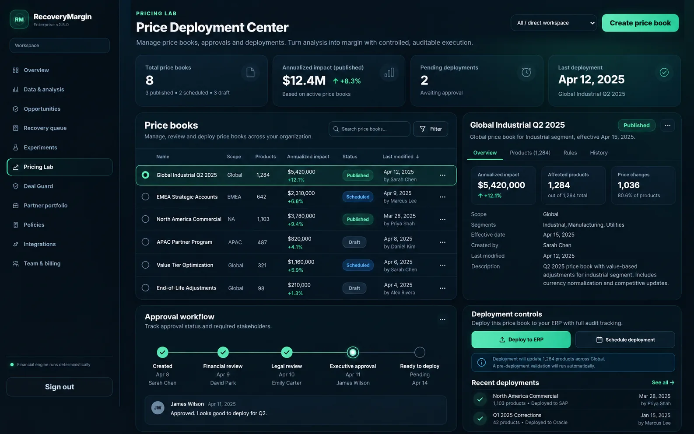
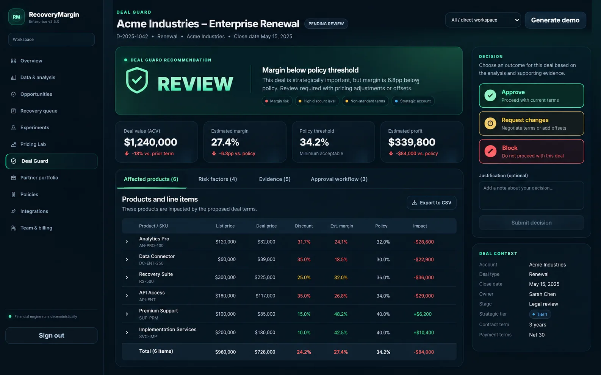
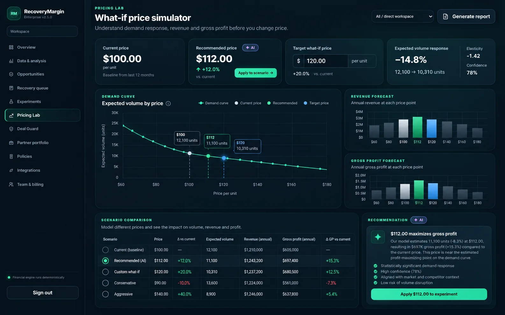
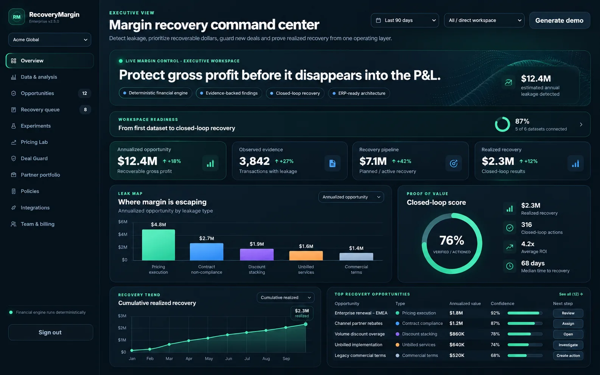

MARGIN RECOVERY OPERATING SYSTEM
Protect gross profit before it disappears into the P&L.
RecoveryMargin helps wholesale and industrial distributors detect margin leakage, quantify financial risk, prevent bad deals, deploy approved pricing changes, and prove recovered dollars.
102 automated tests
140 API operations
37 database tables
Sale-ready v2.6.0

PRODUCT
From leakage detection to pricing execution.
A focused enterprise workflow built around one outcome: protecting and recovering gross margin.
Executive command center
See where margin is escaping — in dollars.
Prioritize the highest-value opportunities, separate observed evidence from modeled estimates, and track recovery from finding to realized outcome.
Deal Guard
Stop bad deals before they become leakage.
Evaluate proposed pricing against margin floors, discount policies, freight impact, contract context, and approval rules before a deal is approved.

Pricing Lab
Model price, volume, revenue and gross profit before publishing.
Use elasticity-aware what-if scenarios, risk scoring and recommendation logic to understand the trade-offs behind a pricing move.

Price Deployment Center
Turn approved recommendations into controlled execution.
Manage versioned price books, effective dates, approvals, scheduled deployments, publishing history and rollback from one auditable workflow.

CLOSED-LOOP WORKFLOW
Detect → Quantify → Decide → Approve → Deploy → Measure
01
Ingest
CSV/XLSX and ERP-ready ingestion with schema mapping, sync runs, lineage and checkpoints.
02
Detect
Multiple margin detectors surface pricing, discount, freight, rebate, contract and customer profitability issues.
03
Prioritize
Quantify annualized exposure and rank opportunities by value, confidence and recovery potential.
04
Govern
Deal Guard, RBAC, approvals, audit logs and policy controls keep pricing decisions accountable.
05
Deploy
Versioned price books, effective dates, publishing, rollback and downstream deployment hooks.
06
Prove
Track action outcomes and recovered dollars to close the loop between insight and realized margin.
TECHNICAL DEPTH
Built as a transferable software asset, not a prototype.
BackendPython · FastAPI · SQLAlchemy · Alembic
DataPostgreSQL · SQLite · pandas · NumPy · scikit-learn
EnterpriseMulti-tenancy · RBAC · API keys · OIDC · SCIM · audit logging
OperationsDocker · Docker Compose · OpenAPI · webhooks · metrics · background jobs
CommercialBilling foundations · partner portfolio · white-label support · entitlements
Validation102 tests · migrations · sale-readiness checks · integrity manifest
ACQUISITION OPPORTUNITY
RecoveryMargin is available for outright acquisition.
Pre-revenue, no existing customers, and intentionally priced as a transferable software asset. The sale-ready package includes source code, deployment tooling, migrations, documentation, integrity checks, and buyer handoff materials.
Best fit
ERP consultancies · pricing firms · distributor software vendors · finance advisory firms
Full source code & project assets included.